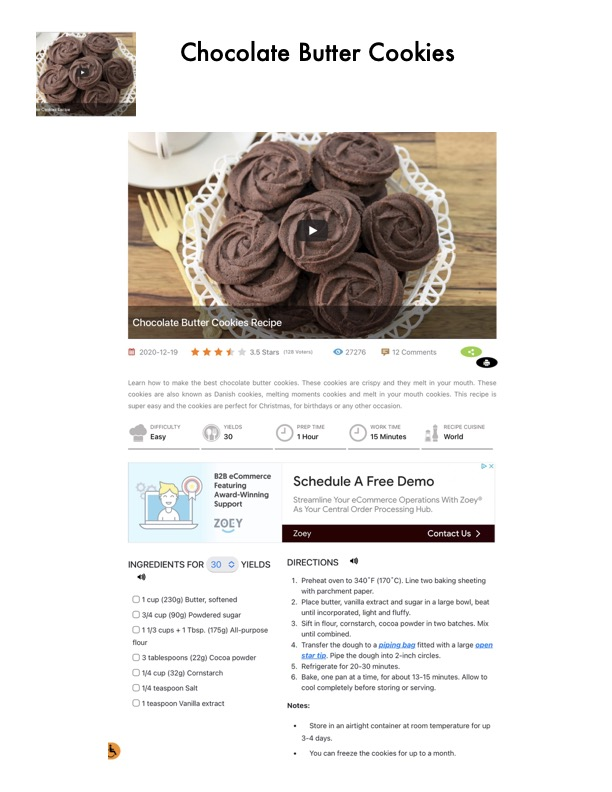

Chocolate Butter Cookies

Original cookbook page 479
Ingredients
- ) 1 cup (230g) Butter, softened
- 3/4 cup (90g) Powdered sugar
- O11/3 cups + 1 Tbsp. (175g) All-purpose
- flour
- (3 tablespoons (22g) Cocoa powder
- 1/4 cup (32g) Cornstarch
- O 1/4 teaspoon Salt
- O 1 teaspoon Vanilla extract
- Schedule A Free Demo
- Streamline Your eCommerce Operations V
- As Your Central Order Processing Hub.
- Cont
Instructions
- 1, Preheat oven to 340°F (170°C). Line two bak with parchment paper.
- Place butter, vanilla extract and sugar in a lar until incorporated, light and fluffy.
- Sift in flour, cornstarch, cocoa powder in two until combined.
- Transfer the dough to a piping bag fitted wit star tip. Pipe the dough into 2-inch circles.
- Refrigerate for 20-30 minutes.
- Bake, one pan at a time, for about 13-15 min Notes: '* Store in an airtight container at room temp 3-4 days. + You can freeze the cookies for up to a mor
Recipe #479 from collection